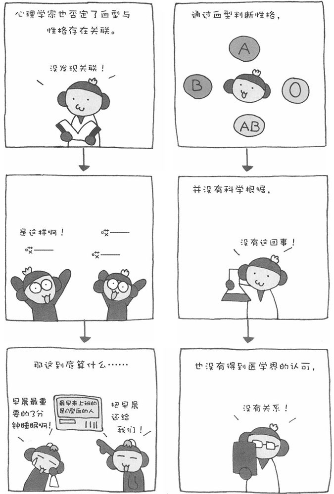
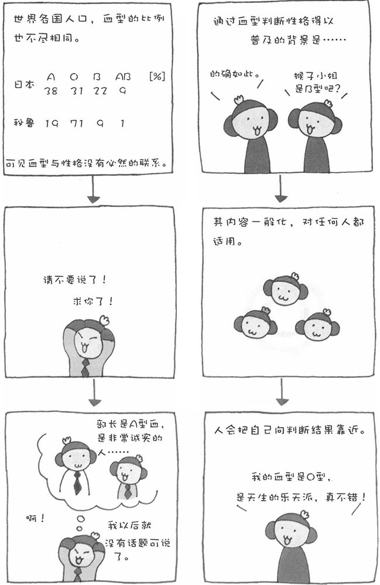

现在，大多数人都知道通过血型可以判断性格。比如，A型血的人一丝不苟，B型血的人我行我素，O型血的人开朗、乐观……在这里，我先要告诉大家一个遗憾的消息：这种通过血型判断性格的方法并没有科学根据，而且有大量的科学数据表明，这种方法在很多情况下是不准确的。
科学家并未在血液中找到能够左右性格的因子。从医学角度来看，人们也没有有利的证据证明血型与性格有关系。只不过据统计学发现不同血型的人在性格因素上存在一定的差别，比如O型血的人比A型血的人××性格要素高出1.3倍等等。然而，这种程度的差异，很难证明血型与性格之间存在关联。听我这么说，也许很多朋友要着急了，"等等！至少用这种方法判断我的性格是准确的，而且对我家人也都适用。"
接下来，我就为您解答这个问题。不过，我们先来追溯一下血型与性格研究的历史。最早将ABO血型与性格联系起来的人是日本人。在1910年左右，即ABO血型被发现的几年后，日本某医生发表了一篇医学论文，其中提及了血型与性格的关系。20世纪20年代，日本军医对血型与阶级的关系展开研究。与此同时，教育学家古川竹二发表了关于性格与气质的研究论文。论文一经发表，就引来诸多关注的目光，并得到很多人的支持。
正是从那时开始，履历表中才增加了血型一栏。不过后来，有一篇调查报告否定了古川竹二的观点，关于血液与性格的研究这才开始降温，并逐渐淡出了人们的视线。直到20世纪70年代，一本研究人类血型的书籍出版发行了，于是又掀起了研究血型与性格的热潮。再加上主流媒体的推波助澜，使这股热潮一直持续到今日。

那么，为什么很多人感觉通过血型判断性格的方法很准呢？还有，为什么这种方法能如此普及呢？接下来，我们将从心理学的角度来寻找其中的原因。
1．判断结果非常暧昧
当然，如果通过血型判断性格不准确，也就不可能这么普及了。可是，这种方法为什么会这么"准"呢？秘密就在判断结果的叙述形式。
比如，虽然说A型血的人大多一丝不苟，O型血的人多为乐天派等，但除了这种程度的区别之外，其他的叙述多是一些一般化的特征。因此，人们总能从中找到适合自己性格的部分，通过血型判断性格的方法也就适用于任何人。再比如，说"A型血的人希望保持平稳的人际关系"，请仔细想一想，有谁不想与他人保持一种平稳的人际关系呢？
2．人会从判断结果中寻找适合自己的部分
比如，说"AB型血的人拥有独特的思维方式"，即使有的AB型血的朋友不具有这样的特征，但看到这样的评价也不会感到反感。而且，人还会把自己想象成就是这样的人，"我就是独特的人"。人会主动向判断结果靠近，在心理学上这被称为"自我成就预言"。
3．通过血型判断性格的方法是方便的社交工具
可以说没有比血型判断性格更方便的社交工具了。人的常规血型只有A、B、AB、O四种，所以相应的性格类型也只有四种，记忆起来非常容易。
与人第一次见面时，如果感觉无话可说，这可是非常好的话题。在公司和朋友之间，这种话题也常常能起到活跃气氛的作用。此外，相信血型决定性格的人，大多具有外向型的倾向，他们受杂志、电视等主流媒体的影响也比较大。
